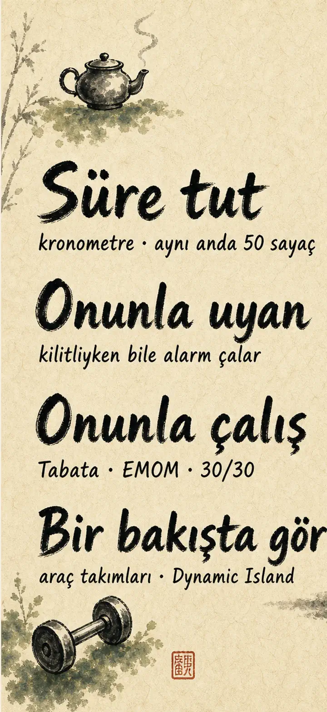
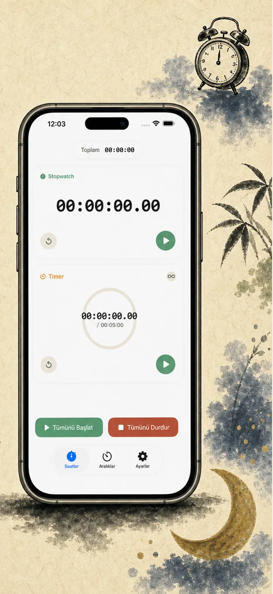
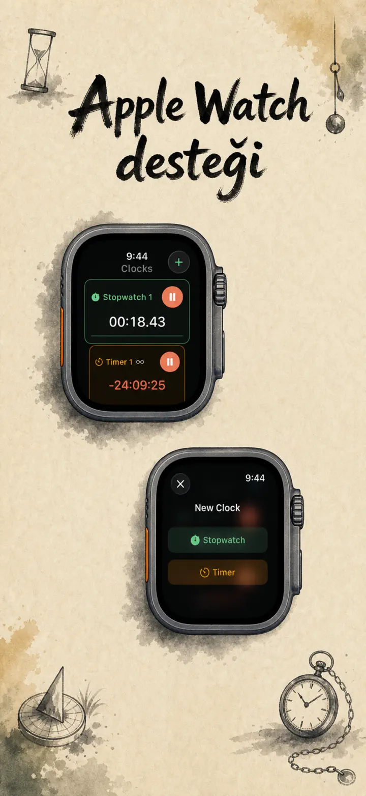
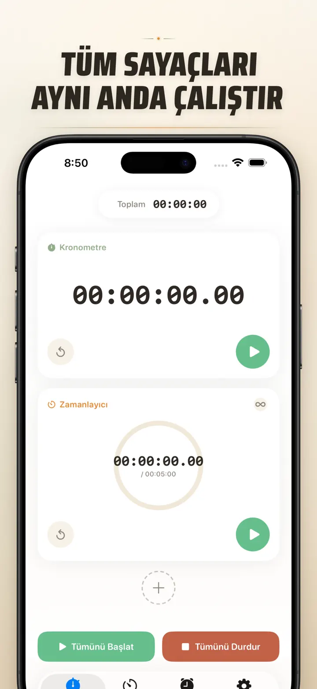
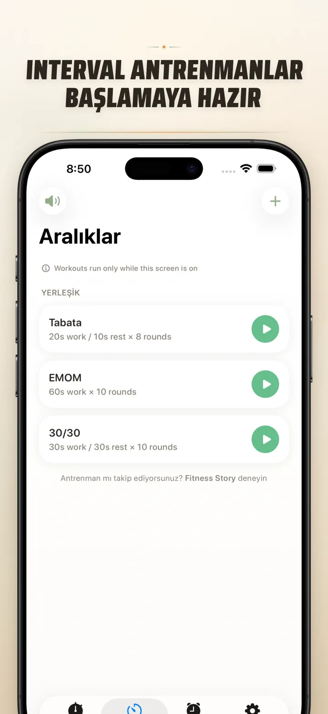
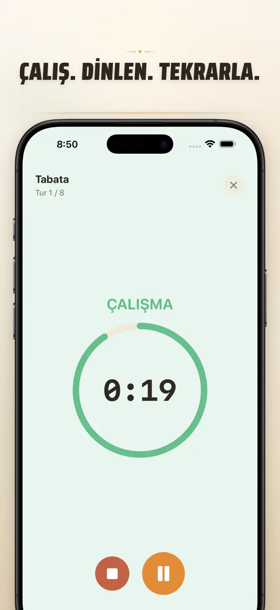
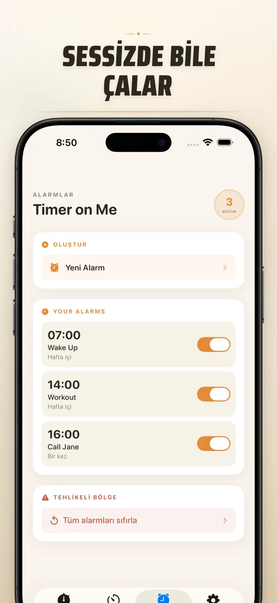

Timer on Me
Zamanlayıcı, Alarm, HIIT
Artık tarihli alarmlarla: herhangi bir gelecek tarih ve saat için tek seferlik alarm, 50 zamanlayıcı, HIIT & Tabata antrenmanları ve Apple Watch desteği.
App Store’dan indir
Uygulama hakkında
Zamanlayıcı Kronometre, iPhone, iPad ve Apple Watch için çoklu zamanlayıcı ve kronometredir. Aynı anda 50 bağımsız zamanlayıcı, hassas interval antrenmanları ve gerçekten çalan alarmlar — iPhone kilitli veya uygulama kapalı olsa bile.
ALARMLAR
- Özel etiket ve haftalık programla uyandırma ve hatırlatma alarmları
- AlarmKit ile çalışır — iPhone kilitli veya Timer on Me kapalı olsa bile alarm çalar
- Ayarlanabilir erteleme (3 / 5 / 9 / 15 / 30 dakika) veya ertelemesiz
- Yerleşik zil seslerinden seç ya da kendi seslerini içe aktar
- Yeni Alarmlar sekmesinden tek dokunuşla aç/kapat
ANTRENMAN VE INTERVAL
- Tabata, EMOM ve 30/30 hazır presetleri — iki dokunuşla başla
- Özel interval editörü: iş, dinlenme ve round sayısı dakika-saniye cinsinden
- Tam ekran antrenman modu, her faz için renk değişimi ve sessize alma
- Antrenman ortasında duraklat, atla ve devam et — ilerleme kaybolmaz
APPLE WATCH
- Gerçek yerel watchOS uygulaması, sadece telefon yansıması değil
- Bileğinde birden fazla kronometre ve zamanlayıcı aynı anda
- Kronometrede saniyenin yüzde biri hassasiyet
- Özel saat yüzü complication'ları ile tek dokunuşta açılış
- iPhone yanında olmadan da çalışır
AYNI ANDA 50 ZAMANLAYICI
- Tek oturumda 50'ye kadar bağımsız zamanlayıcı ve kronometre
- Tekil veya grup halinde başlat, durdur, sıfırla
- Döngüsel roundlar için otomatik tekrar
- Sıfırdan sonra da sayarak fazla süreyi takip et
- İlerleme çubukları: %50'de sarı, %10'da kırmızı
- Sürükle-bırak ile sırala, istediğin ismi ver
GÜVENİLİR UYARILAR
- AlarmKit: iPhone kilitliyken ya da uygulama kapalıyken bile alarm çalar
- Dynamic Island ve Live Activity ile tek bakışta takip
- Ana ekran widget'ları: küçük, orta, büyük
- Yerleşik zil sesleri: çanlar, kuş sesleri, vintage telefon sesleri
- Seçmeden önce tek dokunuşla ön dinleme
- Uzun oturumlarda "Ekranı açık tut" modu
ÖZELLEŞTİR VE PAYLAŞ
- Ondalık, toplam ve yüzde gösterimini istediğin gibi aç-kapa
- Sık kullanılan ayarları kaydet ve üzerine yaz, tek dokunuşla geri yükle
- Ayarları CSV, JSON veya düz metin olarak dışa aktar
- İş arkadaşları, öğrenciler veya koçla paylaş
iPhone, iPad VE APPLE WATCH İÇİN
- Her ekran boyutuna uyarlanan yerleşim
- iPad'de Split View
- 34 dil desteği
İÇİN İDEAL
- HIIT, Tabata, CrossFit ve devre antrenmanı
- Boks, Muay Thai ve dövüş sanatları roundları
- Pomodoro, YKS ve sınav çalışmaları, odaklanma
- Çay demleme, Türk kahvesi, yumurta, baklava ve fırın süreleri
- Yoga, pilates, meditasyon ve nefes egzersizleri
- Sunum provaları ve enstrüman çalışması
- Dersler, atölyeler ve grup etkinlikleri
- Masa oyunları ve ev buluşmaları
Zamanlayıcı Kronometre'yi şimdi indir, her dakikanı kontrol altına al — spor salonu, ofis veya evde.
Gizlilik Politikası: https://masawata.net/privacy-policy.html Hizmet Koşulları: https://www.apple.com/legal/internet-services/itunes/dev/stdeula/
Ekran görüntüleri






Timer on Me
Artık tarihli alarmlarla: herhangi bir gelecek tarih ve saat için tek seferlik alarm, 50 zamanlayıcı, HIIT & Tabata antrenmanları ve Apple Watch desteği.
App Store’dan indir